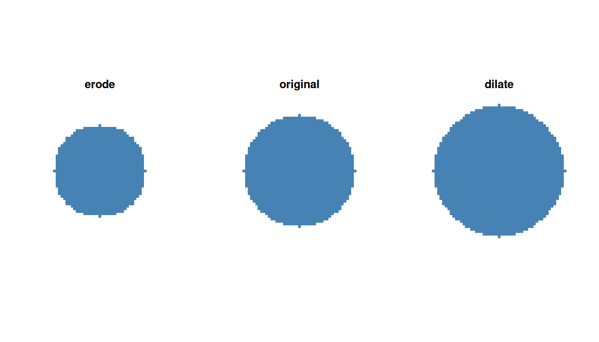
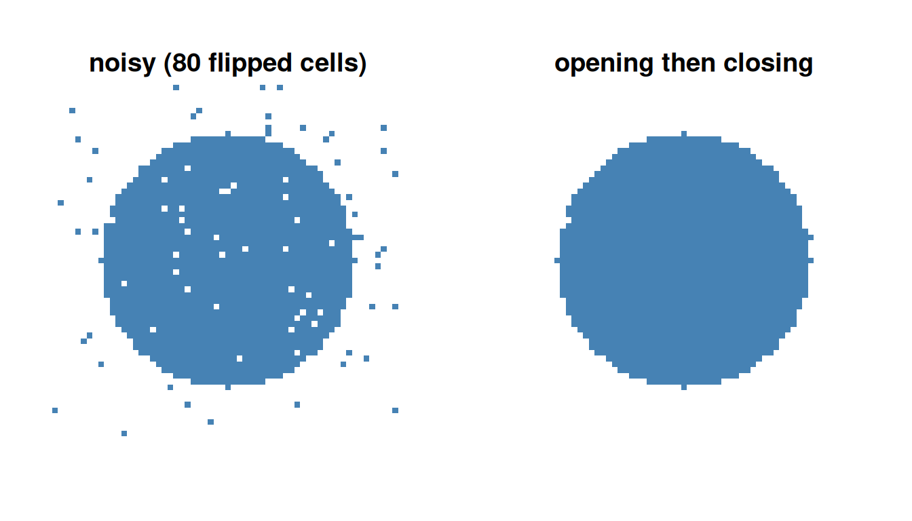
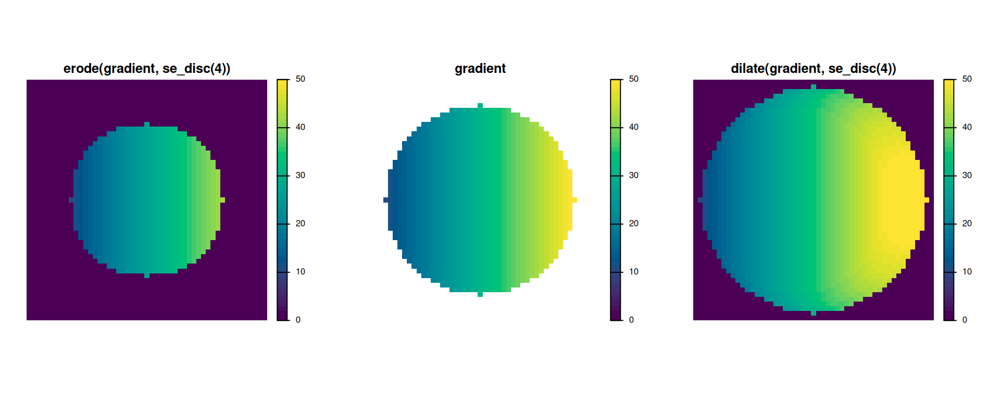
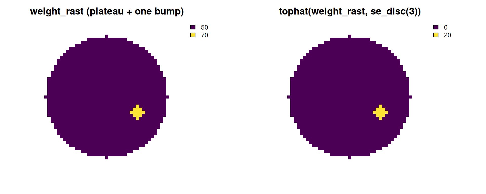
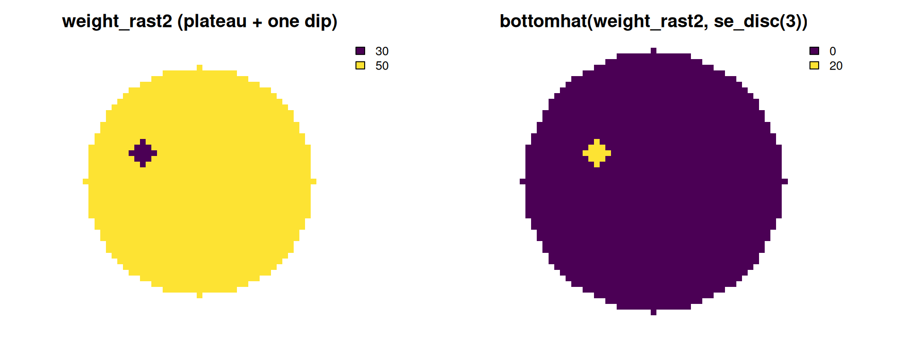
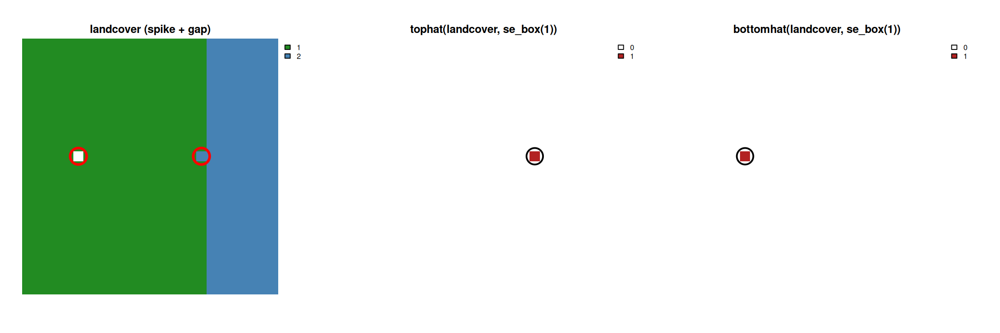

gridmorph exposes six standard morphological operators - erode(), dilate(), opening(), closing(), tophat(), bottomhat() - directly on terra SpatRaster objects, something terra itself doesn’t provide with configurable structuring elements. This vignette is a full tour of them, focused specifically on the part that’s easy to get wrong: what each operator actually means changes depending on whether the input raster is binary, continuous, or categorical, and that’s not just a detail - two of the six operators (tophat(), bottomhat()) compute a genuinely different kind of result for categorical input than for the other two. For everything else in the package - the thirteen shape indices - see vignette("a-basic-usage").
1 Structuring elements
Every operator takes a kernel argument: a plain matrix where 1 includes a cell in the structuring element’s footprint and NA excludes it (matching terra::focal()’s own w convention directly). Three named shortcuts build the common shapes:
se_box(2) # a 5x5 square [,1] [,2] [,3] [,4] [,5]
[1,] 1 1 1 1 1
[2,] 1 1 1 1 1
[3,] 1 1 1 1 1
[4,] 1 1 1 1 1
[5,] 1 1 1 1 1
se_disc(2) # a Euclidean disc of radius 2 [,1] [,2] [,3] [,4] [,5]
[1,] NA NA 1 NA NA
[2,] NA 1 1 1 NA
[3,] 1 1 1 1 1
[4,] NA 1 1 1 NA
[5,] NA NA 1 NA NA
se_diamond(2) # a Manhattan (L1) diamond of radius 2 [,1] [,2] [,3] [,4] [,5]
[1,] NA NA 1 NA NA
[2,] NA 1 1 1 NA
[3,] 1 1 1 1 1
[4,] NA 1 1 1 NA
[5,] NA NA 1 NA NAAny hand-built matrix works too, as long as its non-NA entries are all exactly 1 - erode()/dilate() reject anything else with a clear error rather than silently misbehaving (terra::focal() treats other values as multiplicative weights, not a boolean mask).
2 Binary masks
This is the operators’ original, still fully supported case: 1 = inside the shape, 0/NA = outside. erode() shrinks a shape by one structuring-element radius; dilate() grows it:
r <- rast(nrows = 61, ncols = 61, xmin = 0, xmax = 61, ymin = 0, ymax = 61, crs = "local")
cx <- init(r, "x") - 30.5
cy <- init(r, "y") - 30.5
disk <- ifel(sqrt(cx^2 + cy^2) <= 22, 1, 0)
par(mfrow = c(1, 3))
plot(erode(disk, se_disc(4)), col = c("white", "steelblue"), legend = FALSE, axes = FALSE, main = "erode")
plot(disk, col = c("white", "steelblue"), legend = FALSE, axes = FALSE, main = "original")
plot(dilate(disk, se_disc(4)), col = c("white", "steelblue"), legend = FALSE, axes = FALSE, main = "dilate")
opening() (erode then dilate) removes small bright features narrower than the structuring element without shrinking the shape overall; closing() (dilate then erode) fills small dark gaps without growing it. Both compose directly - opening(mask, k) is exactly dilate(erode(mask, k), k), not an independent implementation - which makes them a natural denoising pair for classification noise: random single-cell flips (both spurious “on” cells and spurious “off” holes) mostly disappear after opening() then closing():
set.seed(1)
noisy <- disk
flipped <- sample(ncell(noisy), 80)
values(noisy)[flipped] <- 1 - values(noisy)[flipped]
cleaned <- closing(opening(noisy, se_disc(1)), se_disc(1))
par(mfrow = c(1, 2))
plot(noisy, col = c("white", "steelblue"), legend = FALSE, axes = FALSE, main = "noisy (80 flipped cells)")
plot(cleaned, col = c("white", "steelblue"), legend = FALSE, axes = FALSE, main = "opening then closing")
cat("cells differing from the true disk - noisy:", sum(values(noisy) != values(disk)),
" cleaned:", sum(values(cleaned) != values(disk)), "\n")cells differing from the true disk - noisy: 80 cleaned: 7 tophat() (mask AND NOT opening(mask)) highlights exactly the small bright features opening() removed; bottomhat() (closing(mask) AND NOT mask) highlights exactly the small dark gaps closing() filled. Both return a 0/1 raster, same grid as the input.
3 Continuous rasters
None of the six operators require a 0/1 mask. erode()/dilate() are focal()-based local-minimum/local-maximum filters with no binarization step, so on continuous input they compute ordinary grayscale morphology - a standard generalization of the binary case, not an approximation of it - and opening()/closing()/tophat()/bottomhat() inherit that directly, since each is built from erode()/dilate() alone. On a smooth left-to-right gradient, erode() visibly pulls the whole surface down toward the background outside the shape (a local minimum filter), and dilate() pulls it up (a local maximum filter) - all three panels below share the SAME range, since they’re the same underlying quantity at three processing stages: without that, each panel’s colour legend would auto-scale to its own min/max, and the same colour would silently mean different values in each one:
disk_r <- rast(nrows = 51, ncols = 51, xmin = 0, xmax = 51, ymin = 0, ymax = 51, crs = "local")
gcx <- init(disk_r, "x") - 25.5
gcy <- init(disk_r, "y") - 25.5
disk_mask <- ifel(sqrt(gcx^2 + gcy^2) <= 20, 1, 0)
gradient <- ifel(disk_mask == 1, gcx + 30, NA)
eroded <- erode(gradient, se_disc(4))
dilated <- dilate(gradient, se_disc(4))
shared_range <- range(c(values(eroded), values(gradient), values(dilated)), na.rm = TRUE)
par(mfrow = c(1, 3))
plot(eroded, col = hcl.colors(50, "viridis"), range = shared_range, axes = FALSE, main = "erode(gradient, se_disc(4))")
plot(gradient, col = hcl.colors(50, "viridis"), range = shared_range, axes = FALSE, main = "gradient")
plot(dilated, col = hcl.colors(50, "viridis"), range = shared_range, axes = FALSE, main = "dilate(gradient, se_disc(4))")
Note that erode()/dilate() fill the WHOLE raster with a real, defined value (the dark background outside the shrunk/grown shape is 0, not NA) - they reshape the raster over its entire extent, the same way erode()/dilate() always have for a plain binary mask. tophat()/bottomhat() are different: their job is to flag a specific feature, so their output stays NA whenever mask itself was NA, rather than asserting a defined 0 residual for a location that was never part of the shape to begin with. A flat plateau with one small, deliberate bump makes the real-valued residual unambiguous - opening() (with a structuring element bigger than the bump) erases it completely, so tophat() flags exactly the bump and nothing else:
plateau <- ifel(disk_mask == 1, 50, NA)
bump <- ifel(sqrt((gcx - 10)^2 + (gcy + 5)^2) <= 2, 20, 0) # radius 2, smaller than the se_disc(3) below
weight_rast <- plateau + bump
weight_th <- tophat(weight_rast, se_disc(3))
par(mfrow = c(1, 2))
plot(weight_rast, col = hcl.colors(50, "viridis"), axes = FALSE, main = "weight_rast (plateau + one bump)")
plot(weight_th, col = hcl.colors(50, "viridis"), axes = FALSE, main = "tophat(weight_rast, se_disc(3))")
tophat()’s definition (mask - opening(mask)) is exactly that: a real-valued residual (here, exactly 20 at the bump, matching its own height above the plateau) highlighting where the raster’s own values exceed its own opening, not a binarized approximation of one. On a 0/1 mask it reduces exactly to the familiar mask AND NOT opening(mask) - not approximately, since opening(x) <= x pointwise whenever the structuring element includes its own centre (true for every named shortcut at every radius). bottomhat() is the mirror image - a small dip below the plateau, filled back in by closing():
dip <- ifel(sqrt((gcx + 10)^2 + (gcy - 5)^2) <= 2, -20, 0)
weight_rast2 <- plateau + dip
weight_bh <- bottomhat(weight_rast2, se_disc(3))
par(mfrow = c(1, 2))
plot(weight_rast2, col = hcl.colors(50, "viridis"), axes = FALSE, main = "weight_rast2 (plateau + one dip)")
plot(weight_bh, col = hcl.colors(50, "viridis"), axes = FALSE, main = "bottomhat(weight_rast2, se_disc(3))")
4 Categorical rasters
Categorical rasters (terra::is.factor() - discrete, unordered class codes, e.g. a land-cover classification) are a genuinely different case, not just a relabelled version of the continuous one. Taking the local min/max of the raw CODE NUMBERS would only mean something spatially if those codes happened to carry a real order, and for nominal categories they don’t - there’s no meaningful sense in which land-cover code 1 (say, forest) is “less than” code 3 (say, urban). So erode()/dilate() switch to standard label-image morphology instead of the numeric min/max formulas above:
-
erode(): a cell keeps its own label only if every cell in its neighbourhood shares that exact label; otherwise it becomes unlabelled (NA). Equivalent to eroding each class’s own binary mask separately and taking the union - classes are mutually exclusive, so there’s never an overlap to resolve. -
dilate(): an already-labelled cell is left untouched; an unlabelled (NA) cell is filled with the majority label among its labelled neighbours. Restricting the fill toNAcells only is what keeps this monotonic (the defining property of dilation - it only ever grows into background, never reassigns existing foreground). A blind majority filter applied everywhere would instead be a smoothing operation, relabelling already-correct interior cells near a strong neighbouring majority.
One landcover raster with a stray class-2 cell poking into class-1 territory AND a one-cell interior gap - far enough from the class boundary that it’s a genuine gap, not just an eroded edge - shows all four operators at once. The circles mark the two cells of interest, in the same spatial position in every panel:
n <- 25
landcover <- rast(nrows = n, ncols = n, xmin = 0, xmax = n, ymin = 0, ymax = n, crs = "local")
values(landcover) <- 1
landcover[, 19:25] <- 2 # a solid class-2 block on the right
landcover[12, 18] <- 2 # a stray class-2 cell poking into class 1
landcover[12, 6] <- NA # an interior gap, well away from the class boundary
landcover <- as.factor(landcover)
k <- se_box(1)
spike_xy <- xyFromCell(landcover, cellFromRowCol(landcover, 12, 18))
notch_xy <- xyFromCell(landcover, cellFromRowCol(landcover, 12, 6))
par(mfrow = c(1, 3))
plot(landcover, col = c("forestgreen", "steelblue"), axes = FALSE, main = "landcover (spike + gap)")
points(rbind(spike_xy, notch_xy), cex = 4, col = "red", lwd = 3)
plot(tophat(landcover, k), col = c("white", "firebrick"), axes = FALSE, main = "tophat(landcover, se_box(1))")
points(spike_xy, cex = 4, col = "black", lwd = 2)
plot(bottomhat(landcover, k), col = c("white", "firebrick"), axes = FALSE, main = "bottomhat(landcover, se_box(1))")
points(notch_xy, cex = 4, col = "black", lwd = 2)
opening() (erode then dilate) removes the stray cell entirely - too thin to survive erosion, then not re-grown by dilation since it isn’t adjacent to the rest of class 2 - and tophat() (!is.na(mask) & is.na(opening(mask)), the label-image analogue of mask AND NOT opening(mask)) flags exactly that one cell, nothing else. The gap works the same way in the other direction: closing() (dilate then erode) fills it back in from its class-1 neighbours, and bottomhat() (is.na(mask) & !is.na(closing(mask))) flags exactly that cell. Subtracting category codes the way the continuous residual does would be meaningless for either direction (what would “class 1 minus class 2” even mean?) - tophat()/bottomhat() return a boolean flag for categorical input, 0/1 but not itself categorical, rather than a numeric residual.
To erode or dilate a single class on its own terms - rather than the symmetric, every-class-at-once behaviour above - convert that class to its own binary mask first (e.g. landcover == 2) and run the operator on that instead.
5 What each operator means, by raster type
| binary (0/1) | continuous | categorical | |
|---|---|---|---|
erode() |
shrink the shape by one SE radius | local minimum filter (grayscale erosion) | keep a label only if the whole neighbourhood agrees; else NA
|
dilate() |
grow the shape by one SE radius | local maximum filter (grayscale dilation) | fill NA cells by majority vote; labelled cells untouched |
opening() |
remove small bright features | grayscale opening (erode then dilate) | remove small/thin single-class regions |
closing() |
fill small dark gaps | grayscale closing (dilate then erode) | fill small gaps within a class region |
tophat() |
mask AND NOT opening(mask), 0/1
|
mask - opening(mask), real-valued |
1 where a label was removed by opening()
|
bottomhat() |
closing(mask) AND NOT mask, 0/1
|
closing(mask) - mask, real-valued |
1 where a gap was filled by closing()
|
The first two columns are a genuine generalization: grayscale morphology (local min/max) restricted to exactly two values reproduces binary morphology exactly, not approximately - continuous contains binary as a special case. Categorical is NOT a further step along that same chain, even though the table lists it last and it shares the same six function names. Ordering is exactly what grayscale morphology needs (min/max require it), and categorical data is defined by not having any - so categorical erosion/dilation can’t be “binary/continuous, generalized further,” it has to be a different rule built on a different assumption (every class treated symmetrically, none privileged as background). That difference shows up even in the pure two-class case, not just with three or more classes: wrap a binary 0/1 raster as a factor and erode it, and a background cell sitting right next to the shape becomes NA, not the stable 0 plain binary erosion gives it - verified directly, not a hypothetical edge case. Ordinary binary erosion treats 0 as an invariant background that only ever gets encroached on; categorical erosion has no privileged class at all, so that same cell’s neighbourhood simply isn’t unanimous. All three columns share a common purpose (shrink, grow, reshape) and a common interface (the same six functions), not a single generalization chain - binary and continuous sit on one axis (does order matter, and how much), categorical sits on a genuinely different one (are classes symmetric, with no order at all).
6 Practical notes
NA = hole, consistently: an NA cell in a binary or continuous mask is treated as background (the same as 0) for erode()/dilate(); in a categorical raster, NA is the only thing treated as background - every other class code, including 0 if it’s one of the raster’s own levels, is a real, persisting label (see ?gridmorph for how this compares to the index functions’ own, deliberately different, “0 is always a hole” convention).
The raster’s own true edge is handled correctly, not silently treated as either “definitely background” or “definitely not a boundary”: a shape reaching the edge of the raster erodes there exactly as it would next to an interior NA hole, and a categorical raster’s own edge behaves the same way an adjacent unknown region would (verified directly against terra::focal()’s own edge-padding defaults, which would otherwise under- or over-erode a shape that touches the raster’s extent).
Built on terra::focal(), chunk-aware on disk-backed rasters the same way terra::distance()/terra::patches() already are - not mmand, despite mmand::erode()/dilate() being somewhat faster per call at sizes that already fit in memory. mmand operates on an in-memory array, full stop; there’s no way to run it on a raster too large to fit in memory, which matters more for this package than the speed difference.
7 See also
vignette("a-basic-usage") covers the thirteen shape indices and how weighted works for them; vignette("c-comparison-with-shapeindices") compares gridmorph against its vector-based sibling package on accuracy, speed, and memory.